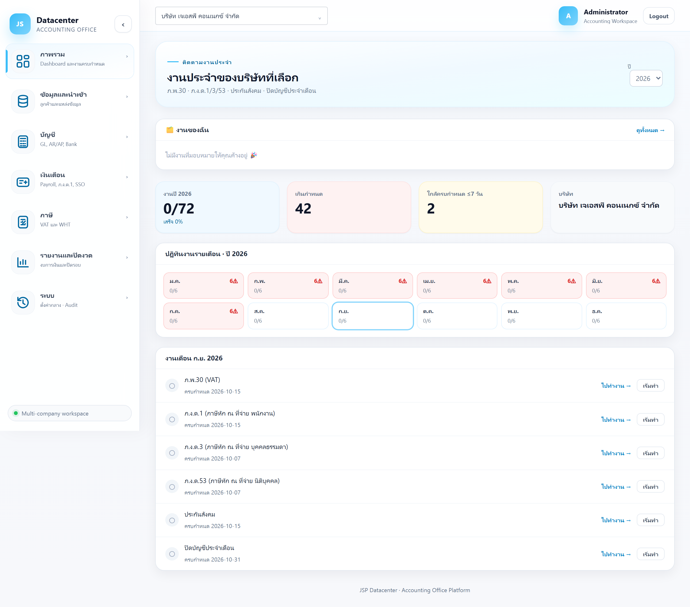
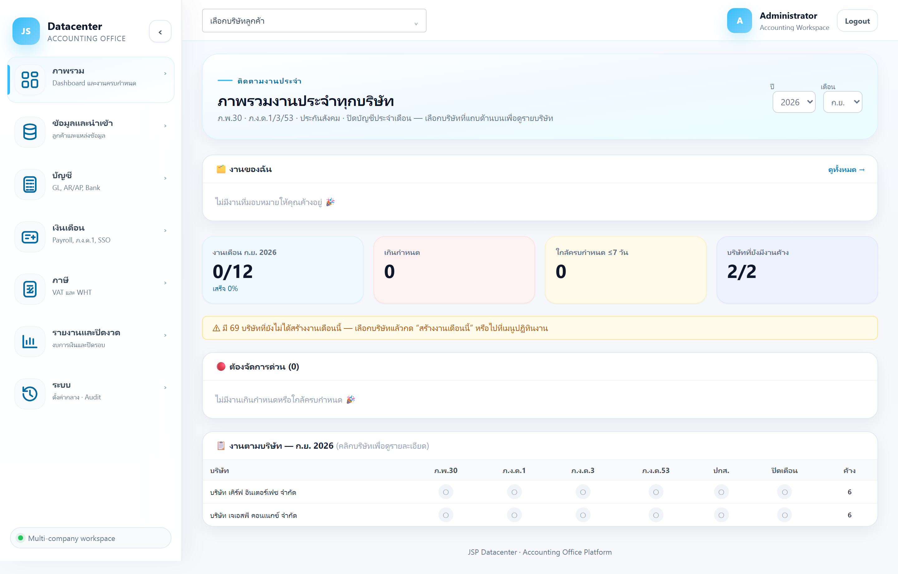

Dashboard
หน้าแรกหลังเข้าสู่ระบบ — ศูนย์รวมการติดตาม “งานประจำ” ที่ต้องยื่นทุกเดือน (ภ.พ.30 · ภ.ง.ด.1/3/53 · ประกันสังคม · ปิดบัญชีประจำเดือน) พร้อมงานที่มอบหมายให้คุณ
Dashboard เปลี่ยนหน้าตาตาม “บริษัทที่เลือกอยู่” ด้านบน — ยังไม่เลือกบริษัท = เห็นภาพรวมทุกบริษัทในสำนักงาน · เลือกบริษัทแล้ว = เจาะดูงานของบริษัทนั้นทั้งปี ล้างช่องเลือกบริษัทเมื่อไรก็กลับมาโหมดภาพรวมได้เสมอ

1. แถบหัวเรื่องด้านบน
| ส่วนที่แสดง | คำอธิบาย |
|---|---|
| หัวข้อ | บอกโหมดที่อยู่ — “ภาพรวมงานประจำทุกบริษัท” หรือ “งานประจำของบริษัทที่เลือก” |
| ปี | เลือกปีที่ต้องการดู (ค.ศ.) มีให้เลือกย้อนหลัง 2 ปี ถึงล่วงหน้า 1 ปี |
| เดือน | แสดงเฉพาะโหมดภาพรวมทุกบริษัท ใช้เลือกเดือนที่จะดูตารางงาน |
2. กล่อง “งานของฉัน”
อยู่ใต้แถบหัวเรื่อง แสดง เฉพาะงานที่มอบหมายให้ผู้ใช้ที่ล็อกอินอยู่ และยังไม่เสร็จ โดยรวมงานจาก ทุกบริษัทที่คุณมีสิทธิ์เข้าถึง ไว้ในที่เดียว
| ส่วนที่แสดง | ความหมาย |
|---|---|
| ค้าง N · เกินกำหนด N | จำนวนงานค้างทั้งหมด และจำนวนที่เลยกำหนดแล้ว (สีแดง) |
| งานทั่วไป | งานที่หัวหน้ามอบหมายผ่านเมนู “งาน / มอบหมายงาน” |
| ภาษี | งานประจำจากปฏิทินงาน (ภ.พ.30, ภ.ง.ด., ปกส. ฯลฯ) |
| วันที่ท้ายแถว | วันครบกำหนด ถ้าเลยกำหนดจะเป็นตัวหนาสีแดงพร้อมบอกว่าเกินมากี่วัน |
| ดูทั้งหมด → | เปิดหน้า “งาน / มอบหมายงาน” เพื่อดูและจัดการงานทั้งหมด |
กล่องนี้เรียงงานเกินกำหนดขึ้นก่อน และแสดง 6 รายการแรก ที่เหลือจะสรุปเป็น “และอีก N งาน” ถ้าไม่มีงานค้างจะขึ้นข้อความ “ไม่มีงานที่มอบหมายให้คุณค้างอยู่ 🎉”
3. โหมด A — ภาพรวมทุกบริษัท (ยังไม่เลือกบริษัท)
เหมาะกับหัวหน้างานหรือผู้ดูแลสำนักงาน ที่ต้องกวาดตาดูว่าเดือนนี้บริษัทไหนยังมีงานค้าง

การ์ดตัวเลข 4 ใบ
| การ์ด | ความหมาย |
|---|---|
| งานเดือน {เดือน} {ปี} | งานที่เสร็จแล้ว / งานทั้งหมดของเดือนนั้น พร้อมเปอร์เซ็นต์ความคืบหน้า |
| เกินกำหนด | จำนวนงานที่เลยวันครบกำหนดแล้วและยังไม่เสร็จ |
| ใกล้ครบกำหนด ≤7 วัน | งานที่จะครบกำหนดภายใน 7 วัน |
| บริษัทที่ยังมีงานค้าง | จำนวนบริษัทที่ยังมีงานค้าง เทียบกับบริษัทที่มีงานทั้งหมด |
ถ้าขึ้นข้อความ “มี N บริษัทที่ยังไม่ได้สร้างงานเดือนนี้” แปลว่าบริษัทเหล่านั้น ยังไม่มีรายการงานประจำของเดือนนี้ในระบบ ให้เลือกบริษัทแล้วกด “สร้างงานเดือนนี้” หรือไปจัดการที่เมนูปฏิทินงาน
ตาราง “🔴 ต้องจัดการด่วน”
รวมงานที่เกินกำหนดหรือใกล้ครบกำหนดจากทุกบริษัทไว้ที่เดียว เรียงความเร่งด่วนให้แล้ว
| คอลัมน์ | ความหมาย |
|---|---|
| บริษัท / งาน / กำหนด | บริษัท ประเภทงาน และวันครบกำหนด |
| สถานะ | ป้ายสีแดง “เกินกำหนด N วัน” หรือป้ายสีเหลือง “อีก N วัน” |
| เปิด → | สลับบริษัทที่เลือกไปเป็นบริษัทนั้นทันที (หน้าจะเปลี่ยนเป็นโหมด B) |
ตาราง “📋 งานตามบริษัท”
ตารางกริดสรุปทั้งสำนักงาน — 1 แถวคือ 1 บริษัท และ 1 คอลัมน์คืองานประจำ 1 ประเภท (ภ.พ.30 · ภ.ง.ด.1 · ภ.ง.ด.3 · ภ.ง.ด.53 · ปกส. · ปิดเดือน) คลิกที่แถวเพื่อเข้าไปดูรายบริษัท
| สัญลักษณ์ | สถานะ |
|---|---|
| ✓ พื้นเขียว | เสร็จสิ้น |
| ⚠ พื้นแดง | เกินกำหนด |
| ● พื้นฟ้า | กำลังดำเนินการ |
| ○ พื้นเทา | รอดำเนินการ |
| – | ไม่มีงานประเภทนี้สำหรับบริษัทนั้นในเดือนนี้ |
คอลัมน์สุดท้าย “ค้าง” สรุปจำนวนงานค้างของบริษัทนั้น ถ้ามีงานเกินกำหนดจะแสดงเป็นสีแดงในรูปแบบ
งานค้าง (จำนวนเกินกำหนด⚠) และถ้าไม่มีงานค้างเลยจะขึ้นเครื่องหมาย ✓
4. โหมด B — รายบริษัท (เลือกบริษัทแล้ว)
เหมาะกับผู้ทำบัญชีที่รับผิดชอบบริษัทนั้นโดยตรง
การ์ดตัวเลข 4 ใบ
| การ์ด | ความหมาย |
|---|---|
| งานปี {ปี} | งานที่เสร็จแล้ว / งานทั้งปีของบริษัทนี้ พร้อมเปอร์เซ็นต์ |
| เกินกำหนด | งานเกินกำหนดสะสมทั้งปี |
| ใกล้ครบกำหนด ≤7 วัน | งานที่จะครบกำหนดภายใน 7 วัน |
| บริษัท | ชื่อบริษัทที่กำลังดูอยู่ (ไว้ตรวจซ้ำว่าเลือกถูกตัว) |
ปฏิทินงานรายเดือน 12 ช่อง
แต่ละช่องคือ 1 เดือน แสดงเป็น เสร็จ/ทั้งหมด และใช้สีบอกสถานะ
| สีของช่อง | ความหมาย |
|---|---|
| เขียว + ✓ | งานเดือนนั้นเสร็จครบแล้ว |
| แดง + N⚠ | มีงานเกินกำหนด N รายการ |
| ขาว/ฟ้า | มีงานอยู่ระหว่างดำเนินการ |
| เทา “ไม่มีงาน” | ยังไม่ได้สร้างงานของเดือนนั้น |
| มีขอบฟ้าเน้น | เดือนปัจจุบัน |
รายการงานเดือนปัจจุบัน
ส่วนล่างสุดคือรายการงานของเดือนนี้ พร้อมปุ่มทำงานในแต่ละแถว
| ปุ่ม / ส่วนที่แสดง | หน้าที่ |
|---|---|
| + สร้างงานเดือนนี้ | แสดงเมื่อยังไม่มีงานของเดือนนี้ — กดเพื่อให้ระบบสร้างรายการงานประจำตามประเภทที่บริษัทนี้ต้องยื่น |
| ไปทำงาน → | ลัดไปยังเมนูที่ใช้ทำงานนั้นจริง เช่น ภ.พ.30 → เมนูภาษีมูลค่าเพิ่ม, ปกส. → เมนูประกันสังคม |
| เริ่มทำ | เปลี่ยนสถานะงานเป็น “กำลังดำเนินการ” |
| ทำเสร็จ | เปลี่ยนสถานะเป็น “เสร็จสิ้น” — ตัวเลขบนการ์ดและปฏิทินจะอัปเดตทันที |
งานที่เลยกำหนดยังกด “เริ่มทำ” แล้วตามด้วย “ทำเสร็จ” ได้ตามปกติ ระบบเก็บประวัติไว้ว่าเสร็จช้าไปกี่วัน
5. ปัญหาที่พบบ่อย
| อาการ | สาเหตุและวิธีแก้ |
|---|---|
| อยากดูภาพรวมทุกบริษัท แต่ขึ้นบริษัทเดียว | ยังเลือกบริษัทค้างอยู่ที่แถบด้านบน — ล้างการเลือกบริษัทเพื่อกลับสู่โหมดภาพรวม |
| ตารางงานว่าง / ขึ้น “ยังไม่มีงานในเดือนนี้” | ยังไม่ได้สร้างงานประจำของเดือนนั้น — เลือกบริษัทแล้วกด “สร้างงานเดือนนี้” หรือใช้เมนูปฏิทินงาน |
| ไม่เห็นบางบริษัทในตาราง | Dashboard แสดงเฉพาะบริษัทที่บัญชีผู้ใช้ของคุณมีสิทธิ์เข้าถึง — ติดต่อผู้ดูแลระบบเพื่อขอสิทธิ์เพิ่ม |
| กด “ทำเสร็จ” แล้วตัวเลขไม่ขยับ | ตัวเลขบนการ์ดสรุปตามปีที่เลือกอยู่ ตรวจว่ากำลังดูปีเดียวกับงานที่เพิ่งปิดหรือไม่ |
เริ่มงานจริงกับบริษัทลูกค้าได้ที่ ลูกค้า → และ นำเข้าข้อมูล →